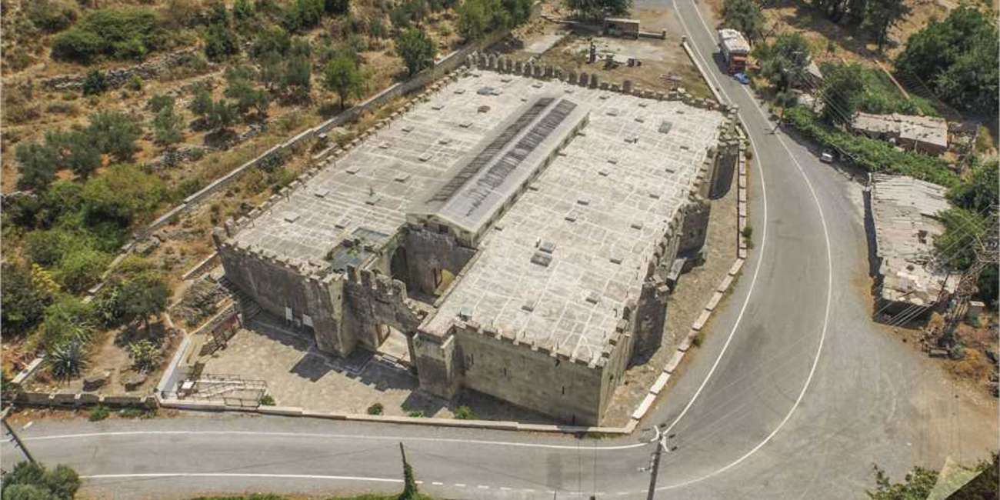
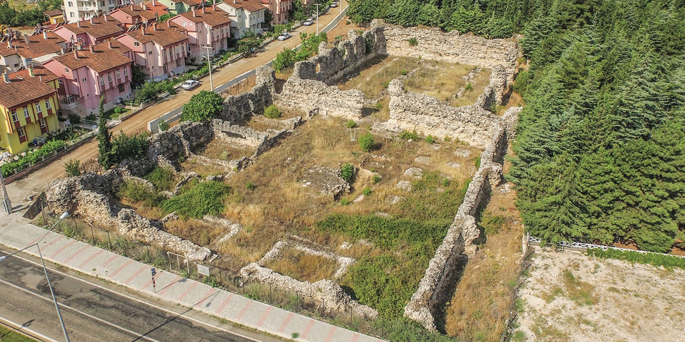

Kızılören Han
Konya
The inn, constructed by Kutluğ B. Mehmed is on the Konya-Beyşehir highway. It has an enclosed
section with three vaults and a courtyard. The door of the courtyard is like a separate building and
has two floors. One of the three rooms upstairs is a masjid. The inn resembles a castle, supported by
towers from outside. The front of its portal over the round arches is decorated with knots carved
out of two-colored stones. The façade has a monumental look with the towers in the corners. Inside
the building, there are ornamented colonnade arches on the courtyard’s right. The door frames to
the left, rooms, the cottage masjid at the center sitting on four arches reached by stairs, and the
portal of the enclosed hall are richly decorated. The portal of the hall is simpler compared to the
ornamentations on the outer portal and the upper part of which has been ruined. The dome at the
center of the building sits on pendentives with arches that have been decorated with squinches with
muqarnas.

Alara Han
Antalya
The inn is near the Alara Castle on the old Antalya-Alanya road and it has been constructed in the
period of Alaeddin Keykubad I. On the Alanya-Konya route, Alara Inn was the first stop to offer accommodation.
The building was constructed especially to welcome Keykubad who came to Alanya
to spend winters. The inn looks like a castle from a distance with towers and dentils. The courtyard
is surrounded with stables for horses from three sides. Although this is a sultan inn, it does not have
the typical plan of similar inns. The covered and open spaces of Alara Inn are adjacent to one another
on a rectangular plan. Although a typical Seljuk inn has a small number of rooms for accommodation,
Alara Inn excels with its eight rooms opening to the closed courtyard.
Şarapsa Han
Antalya
The inn is to the west of Alanya, a short distance inland from the current Antalya highway. It has
been constructed during the reign of Gıyaseddin Keyhüsrev II. It has a slim and long interior section
with a single vault. There is a masjid on one end. It was designed as a single rectangular room and
constructed as a single mass, consisting of the closed shelter section and a masjid adjacent to it on
the east side, covered with a pointed tunnel vault. On the northern façade of the inn, there is a protruding
portal of stone, cut in the form of a prism. A masjid surrounded by high walls is on the east
wing. Ruins of a structure that lie a few kilometers to the west is estimated to be an “observation
tower” for watching possible threats that could come from the sea.
Gelendost (Ertokuş) Han
Isparta
Situated on the Eğridir-Konya road by the Eğirdir Lake, the inn was constructed in 1223-1224 under
the patronage of Mübarizeddin Ertokuş, a well-known statesman of the Alaeddin Keykubat I period.
The rectangular structure consists of a courtyard and a covered section with three vaults. There
is an octagonal pool at the center of the courtyard. The six buttress towers are among the most
significant features of the caravansary. The buttresses support the wall and give the structure a
castle-like appearance, and also a symbolic meaning. There is one gargoyle on each of the window
openings between the buttresses. The gargoyles have been made from a single piece of stone with a
rectangular shape that does not have any ornamentations.

Eğirdir Han
Isparta
The inn is located in Yeni Mahalle (Kervansaray), by the lake in the district of Eğirdir in Isparta. It
was constructed in 1237-38 during the time of Gıyaseddin Keyhüsrev II. The outer dimensions are
approximately 40x85 meters and the building consists of an outdoor and an indoor section. It has
a rectangular plan lying in the east-west direction. The courtyard extends five meters further from
the closed section of the northern and southern façades. The same design applies to the outdoor
section, with five buttresses each in the corner of the northern and southern façades. The portal
was largely destroyed and it is hard to say if there were any ornamentations over it. It is assumed
that a large proportion of its decorations were used in the construction of the castle and the city
walls after the inn was abandoned.
Kırkgöz Han
Antalya
It lies on the Antalya-Burdur road, before the Çubukbeli turning, 1 kilometer along the road. It has
been constructed upon the orders of Gıyaseddin Keyhüsrev II ( 1236-1246). The inn which does not
have any ornamentation, neither on its portal, has a different plan with a long and horizontal, vaulted
hall, and a large courtyard with a colonnade in the front. Rubble stones have been used in the walls
of the inn based on a rectangular form, strengthened on the corners with buttresses.

Evdir Han
Antalya
Evdir Inn is on the Antalya-Burdur highway, 18 kilometers to the northwest of Antalya. It was constructed
during the reign of İzzettin Keykavus I ( 1210-1219). It was built on the remains of an ancient
city nearby, the rubble from which has been used as building materials during the construction. The
inn has an original plan, with a large courtyard in the middle, four iwans and a magnificent portal.
The niche of the arch was filled with muqarnas decorations in the form of an oyster shell, uniting at
the center. The portal has been decorated with slightly curved margents. The margent in the center
constitutes a geometric frame connecting to 12 pointed stars. On the inner surface of the portal
there is one small apse with two rows of arches. The courtyard is surrounded with two rows of colonnades
on four sides. The colonnades are directed towards the courtyard with vaults.
İncir Han
Burdur
The inn is near the İncir village, just after the Bucak turning on the Antalya-Burdur highway. Constructed
in the time of Gıyaseddin Keyhüsrev II ( 1236-46), the inn is located on a flat area and consists
of a closed section with five vaults and a courtyard. Just near the inn are a fountain and a public
bath. There are two symmetrical lion figures on the portal of the covered section. The sun rosette
with a human head on the back of the lions and two small star rosettes at the bottom are dominant
figures. Also seen on the silver coins of this period, lion rosettes could represent the sultan Gıyaseddin
Keyhüsrev II and his hegemony. There is a moon or a sun rosette with a human figure once again
on a vault inside İncir Inn. These two images, one the master of the land (image of a lion) and the
other the master of the skies (the sun symbol) in unison, symbolize the power of the state. Excavations
were carried out in the years 1992-93 and 2000 in the courtyard to uncover a large proportion
of the inn. Decorated pieces of cut stone and coins belonging to the Anatolian Seljuk and Ottoman
periods have been found.
Susuz Han
Burdur
It is in the Susuz village, which lies on the Antalya-Burdur highway. The inn is estimated to be built
during the reign of Gıyaseddin Keyhüsrev II ( 1246). It consisted of a covered section with five vaults
and a courtyard which does not exist today. The covered section is nearly a square in form with a
dome in the center. All ornamentations are on the main portal, made of marble. There are dragon
figures on the apses of the small niches on the side walls.. The dragon symbolizes underground powers,
darkness and the moon, and the heads are the symbol of light and sun. Before the entrance to
the main section, on both sides of the niches there are apses decorated with herbal figures; there is
also a small column, the body of which is decorated with geometric figures and an acanthus head.
On the upper part of the apses there are angel figurines in relief, which have been ruined, together
with dragon figures on the margents of the arches. Among the dragon heads there is a coat of arms,
which can be interpreted as a sun or a human head. On the arches of the side niches of the portal,
there is a human head on each, depicted inside the open mouths of the two double dragon figures
Çardak Han
Denizli
The inn which is on the Denizli-Eğirdir highway has been built in 1230 by then Emir Esededdin Ayaz
bin Abdullah eş-Şehabi. In the caravansary consisting of an indoor section and a courtyard, the closed
section is smaller than the courtyard. On the portal of the closed section at both sides of the
inscription over the entrance door, there is one lion figure on cantilevers with muqarnas. Again, on
the caps of the columns to the north of the center part there are figures of bulls, fish and sheep.
Akhan
Denizli
7 km from Denizli, on the Denizli-Afyon-Ankara
highway, the inn is situated near the bridge on the Çürüksu River. It was built by Emir
Seyfeddin Karasungur bin Abdullah, son of Abdullah who served as governor of Denizli for
twenty years. According to Friedrich Sarre, a 19th century traveller and art historian, the inn
was built with cut marble stones brought from the Laodicaea ruins. It has a monumental
entrance on its front façade, with towers at both corners of the portal. The inn consists of a
closed and an open section and it is has been constructed as a rich group of buildings with a
public bath, masjid, iwan (three sided hall) and several closed rooms in the courtyard section.
The portal of the courtyard, decorated with various geometric figures, animal figures and
plant motifs, is one of the finest examples of Anatolian Seljuk stone dressing art. On the margent
surrounding the door, there are figures of wild animals such as birds, deer, chevrotains
and lions, stylized flowers, and various imaginary creatures and figures such as double headed
eagle and dragon motifs and sphinxes.
Digital Caravanseria Project | Theory and Methods in Digital Heritage | Istanbul Technical University, Faculty of Architecture | 2019-2020 Spring Semester
Taner Üsküplü